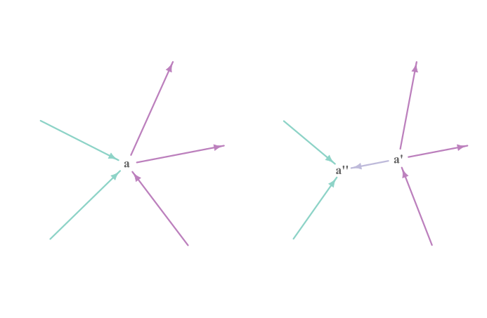

[Notes] Spectral analysis of large dimensional random matrices by Zhidong Bai & Jack W. Silverstein.
Multiple Matrix
多重指标 Multiple Index
Let $t \in \mathbb{Z}_+$ and $n_1, \cdots, n_t \in \mathbb{Z}_+$ be positive integers. The tuple $\mathbf{n} = (n_1, \cdots, n_t)$ is called a multiple dimension.
If $\mathbf{i} = (i_1, \cdots, i_t)$ is a tuple taking values in $[\mathbf{n}] := [n_1] \times \cdots \times [n_t]$, then $\mathbf{i}$ is called a multiple index with dimension $\mathbf{n}$.
多重向量 Multiple Vector
A multiple vector $\mathbf{a} = ( a_{\mathbf{i}} )$ with dimension $\mathbf{n} = (n_1, \cdots, n_t)$ is a collection of complex numbers indexed by $\mathbf{i} \in [\mathbf{n}]$.
We denote the set of multiple vectors with dimension $\mathbf{n}$ by $\mathbb{C}^{\mathbf{n}}$.
The norm of the multiple vector $\mathbf{a}$ is defined as
Here the summation is taken on $\mathbf{i} \in [\mathbf{n}]$.
多重矩阵 Multiple Matrix
A multiple matrix $\mathbf{A} = ( a_{\mathbf{i}, \mathbf{j}} )$ with dimension $\mathbf{m} = (m_1, \cdots, m_s)$ and $\mathbf{n} = (n_1, \cdots, n_t)$ is a collection of complex numbers indexed by $\mathbf{i} \in [\mathbf{m}]$ and $\mathbf{j} \in [\mathbf{n}]$.
We denote the set of multiple vectors with dimension $\mathbf{m}$ and $\mathbf{n}$ by $\mathbb{C}^{\mathbf{m} \times \mathbf{n}}$.
The norm of the multiple matrix $\mathbf{A}$ is defined as
Here $\mathbf{g}$ and $\mathbf{h}$ are multiple vectors with dimensions $\mathbf{m}$ and $\mathbf{n}$, respectively, and the summation is taken on $\mathbf{i} \in [\mathbf{m}]$ and $\mathbf{j} \in [\mathbf{n}]$.
- The norm of the multiple matrix $\mathbf{A}$ can be equivalently defined as
- For any $\mathbf{g} \in \mathbb{C}^{\mathbf{m}}$ and $\mathbf{h} \in \mathbb{C}^{\mathbf{n}}$, we have
注：
固定多重向量 $\mathbf{g} \in \mathbb{C}^{\mathbf{m}}$，假定 $| \mathbf{g} | = 1$ 并且 $\sum_{\mathbf{v}} \left| \sum_{\mathbf{u}} a_{\mathbf{u}, \mathbf{v}} g_{\mathbf{u}} \right|^2 \not= 0$。在这一情形下，为了使 $\left|\sum_{\mathbf{i}, \mathbf{j}} a_{\mathbf{i}, \mathbf{j}} g_{\mathbf{i}} h_{\mathbf{j}}\right|$ 达到最大值，只需取
同理，固定多重向量 $\mathbf{h} \in \mathbb{C}^{\mathbf{n}}$，假定 $| \mathbf{h} | = 1$ 并且 $\sum_{\mathbf{v}} \left| \sum_{\mathbf{u}} a_{\mathbf{u}, \mathbf{v}} g_{\mathbf{u}} \right|^2 \not= 0$。在这一情形下，为了使 $\left|\sum_{\mathbf{i}, \mathbf{j}} a_{\mathbf{i}, \mathbf{j}} g_{\mathbf{i}} h_{\mathbf{j}}\right|$ 达到最大值，只需取
Graph-Associated Multiple Matrix
有向图 Directed Graph
Let $G = (V, E; f \times g)$ be a directed graph with $t$ vertices and $k$ edges, where
- $V = [t] = \{ 1, \cdots, t \}$.
- $E = \{ e_j \}_{j \in [k]} = \{ e_1, \cdots, e_k \}$.
- $f \times g$ is a mapping from $[k]$ to $V \times V$, with the property that, for each $j \in [k]$, the $j$-th edge $e_j = \big( f(j), g(j) \big )$ goes from the vertex $f(j)$ to the vertex $g(j)$.
维度一致性约束 Consistent Dimension Restriction
Let $\{ \mathbf{T}^{(j)} \}_{j \in [k]}$ be a collection of matrices corresponding to the $k$ edges. We say that $\{ \mathbf{T}^{(j)} \}_{j \in [k]}$ is subject to the consistent dimension restriction given by $G$ if there exists a collection of positive integers $\{ m_a \}_{a \in V}$ such that for each $j \in [k]$, the dimension of matrix $\mathbf{T}^{(j)}$ is $m_{f(j)} \times m_{g(j)}$.
图关联多重矩阵 Graph-Associated Multiple Matrix
Let $U, W \subset V$ be two disjoint sets of vertices. Here $U$ and $W$ can be empty sets.
Define the multiple indices
where for each $a \in V$, the index $i_a$ takes values in $[m_a]$.
Then the graph-associated multiple matrix $\mathbf{T}(G)$ with left index $\mathbf{u}$ and right index $\mathbf{w}$ is define by
边向逆转 Reverse of Edges
Assume that $J \subset [k]$.
[Graph] We can define a new graph $\widetilde{G}= \big ( V, \widetilde{E}; \phi \times \varphi \big )$ by reversing the edges in $\{ e_j \}_{j \in J }$. In other words,
- $\phi(j) = g(j)$ and $\varphi(j) = f(j)$ for $j \in J$.
- $\phi(j) = f(j)$ and $\varphi(j) = g(j)$ for $j \in [k] \backslash J$.
[Matrices] Now define $\widetilde{\mathbf{T}}^{(j)} = ( \mathbf{T}^{(j)} ) ^ \top$ for $j \in J$ and $\widetilde{\mathbf{T}}^{(j)} = \mathbf{T}^{(j)}$ for $j \in [k] \backslash J$.
Then $\{ \widetilde{\mathbf{T}}^{(j)} \}_{j \in [k]}$ satisfies the consistent dimension restriction given by $\widetilde{G}$.
[Multiple Matrix] Let $\widetilde{\mathbf{T}}(\widetilde{G})$ be the multiple matrix associated with the graph $\widetilde{G}$ with left index $\mathbf{u}$ and right index $\mathbf{w}$,
Note that for any $\mathbf{u}$ and $\mathbf{w}$,
Thus $\mathbf{T}(\widetilde{G}) = \mathbf{T}(G)$.
顶点分裂 Splitting of Vertex
Assume that $1 \in V \backslash (U \cup W)$.
Let $\{ e_j \}_{j \in J_0}$ be a subset of the set of edges adjacent with the vertex $1$. Here $J_0 \subset [k]$.
[Graph] Now define a new graph $\widetilde{G}= ( \{ 0 \} \cup V, \widetilde{E}; \phi \times \varphi )$ by splitting the vertex $1$ into two vertices.
- Add an edge $\widetilde{e}_0$ from vertex $0$ to $1$, that is, $\phi(0) = 0$ and $\varphi(0) = 1$.
- Attach all the edges indexed by $J_0$ to the new vertex $0$. In other words, for all $j \in J_0$,
- All other edges remain the same, that is, $\phi(j) = f(j)$ and $\varphi(j) = g(j)$ for all $j \in [k] \backslash J_0$.

[Matrices] Now define $\mathbf{T}^{(0)} = \mathbf{I}_{m_1}$. Recall that $m_1$ is the dimension associated with the vertex $1$ in graph $G$.
Then $\{ \mathbf{T}^{(j)} \}_{j \in \{ 0 \} \cup [k]}$ satisfies the consistent dimension restriction given by $\widetilde{G}$.
[Multiple Matrix] Let $\widetilde{\mathbf{v}} = (i_0, \mathbf{v})$, where $i_0$ takes values in $[m_0] = [m_1]$. And let $\mathbf{T}(\widetilde{G})$ be the multiple matrix associated with the graph $\widetilde{G}$ with left index $\mathbf{u}$ and right index $\mathbf{w}$,
Note that for any $\mathbf{u}$ and $\mathbf{w}$,
Thus $\mathbf{T}(\widetilde{G}) = \mathbf{T}(G)$.